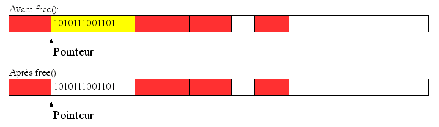
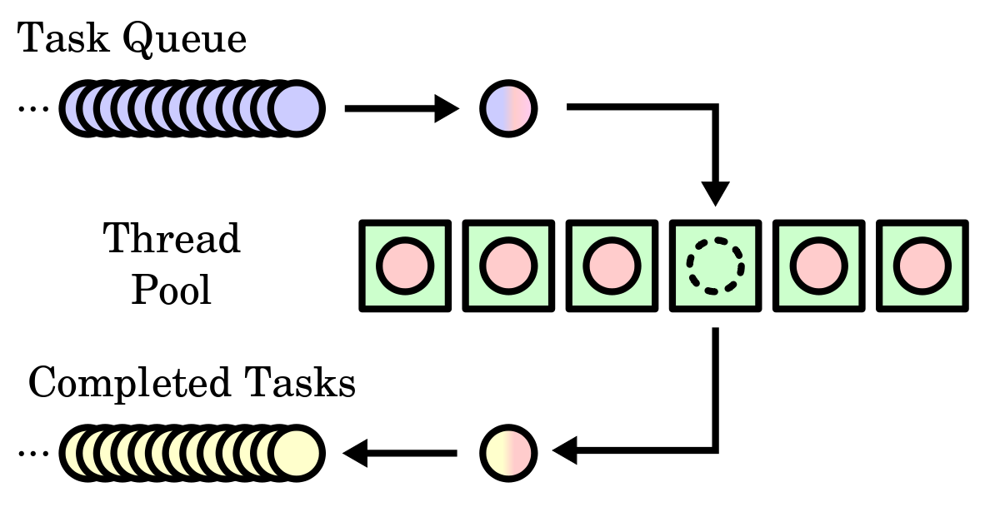

Bienvenue sur ma page
Ici, vous trouverez tout sur moi : mon identité, mon CV, mes projets et mon parcours.
Ce site est un
résumé de mes compétences et me fait aussi guise de portfolio.
Qui suis-je ?
Je suis Romain ROSANO, un étudiant de 21 ans ayant grandi dans le sud de la France. Je suis attiré par plein d'activités que je pratique très souvent comme le volley, le vélo (ma plus grande passion !), les jeux vidéos tout comme les jeux de société (je fais même partie de l'association Bazar Des Jeux dans mon école que j'anime avec des amis chaque semaine). Je suis très souvent joyeux car j'adore profiter de la vie avec mes amis tout en faisant ce qui me plaît le plus !

Mon CV
Mon CV
Vous voulez en savoir plus sur moi ? N'hésitez pas à télécharger mon CV !
Vous y trouverez toutes les informations nécessaires me concernant
et vous pourrez aussi découvrir mes compétences.
Pour le télécharger, cliquez sur ce
lien.
Vous pouvez aussi me retrouver sur LinkedIn en cliquant juste
ici.
Mes projets
Vous trouverez ici les principaux projets que j'ai réalisés ou auxquels j'ai participés, que le projet soit scolaire comme personnel.
Décembre 2022

Création de grammaire et parsing par automates
L'objectif était de créer une grammaire permettant de parser des expressions régulières, à l'aide de Java, afin d'utiliser un outil déjà existant pour représenter les expressions sous forme d'automates.
Janvier 2023
Ré-implémentation des fonctions natives C
Le but de ce projet était de re-penser et de coder les fonctions permettant l'allocation mémoire en C : malloc, free...
Avril 2023
Implémentation du jeu du Simon sur carte STM32
Il s'agissait de proposer aux professeurs un projet que l'on
aimerait réaliser en binôme à l'aide d'une carte STM32 et
d'une carte fille (contenant des interrupteurs, des leds, un
potentiomètre, un haut-parleur et des boutons).
Nous avons choisi de réaliser le jeu du Simon à l'aide des leds (pour
l'affichage des couleurs et du timer), des interrupteurs (pour le choix de
la difficulté) et des boutons (pour le lancement du jeu) ; le tout relié à
l'ordinateur pour pouvoir reproduire la séquence des couleurs avec le clavier
et pour communiquer avec le joueur.
Juin 2023
Réalisation d'un jeu vidéo en Java utilisant des automates
Durant tout le mois, nous devions réaliser un jeu vidéo, jouable à 2, par groupe de 7 élèves sur Java. Le but principal était de coupler les automates et la programmation objet tout en respectant un contrat établi au préalable entre les 2 professeurs encadants et notre groupe.
Juillet 2023

Découverte de Java Swing en s'appuyant sur le jeu : la Pipopipette
Pendant les vacances d'été, j'ai voulu me donner comme objectif de découvrir la bibliothèque Java Swing (en particulier, l'utilisation des listeners et l'usage d'outils d'interaction avec l'utilisateur). Pour me servir de support, j'ai alors choisi de réaliser le jeu de la Pipopipette.
Décembre 2023
Création d'un serveur producteur-consommateur
Le but du projet était de réaliser en Java un système
permettant de simuler un serveur de production et de consommation.
Nous devions donc gérer les problèmes de concurrence tout en
créant une file d'attente "de connexion" et l'usage d'une pool de threads.
Décembre 2023

Nuit de l'info 2023 : Création d'un site web pour l'écologie
Avec mes 6 amis, nous nous sommes donnés comme objectif de participer
à la Nuit de l'info. Le but de cette année était de réaliser en une nuit
un site web permettant de sensibiliser les gens en : "démêlant le vrai du faux".
On a donc utiliser Java Spring Boot pour le back-end et React pour le front-end.
Bien que nous n'avions peu de compétences sur le web, cela nous a permis de découvrir
ces nouvelles technologies tout en nous amusant et en apprenant.
Janvier-Février 2024

Apprentissage personnel du développement web
Suite à cette nuit de l'info, j'ai eu une très grande envie de découvrir personnellement le développement web. Cependant, je voulais commencer les choses dans l'ordre contrairement à la nuit de l'info où nous étions directement parti sur React. J'ai donc commencé par apprendre le HTML, le CSS dans un premier temps en créant mes premières pages web, puis dans un second temps, je me pencherais plus sur l'usage de JavaScript.
Janvier-Avril 2024

Adaptation d'une application web pour créer des diagrammes de Gantt
Par groupe de 4, nous avions pour but de réaliser une application web basée sur
le code d'un outil déjà existant (permettant d'évaluer le temps d'exécution d'une
fonction ainsi que les fonctions "internes" appelées).
L'objectif était donc d'adapter cette application pour que l'on puisse, dans un premier
temps, créer des diagrammes de Gantt pour la réservation de clusters sur Grid'5000
(serveur fournissant des coeurs d'exécution) à partir de fichiers .json (statique). Puis, dans un second temps,
de pouvoir stocker et modifier les données du fichier étant stocké sur un serveur, rendant le site
dynamique avec un rafraîchissement de la page régulier.
Février-Mars 2024

Développement d'un moteur de recherche
Le but de ce projet était de développer un moteur de recherche en Python capable de trouver les documents les plus pertinents parmi un corpus de plusieurs milliers de fichiers. Avec mon binôme, nous avions décidé d'aller plus loin en créant une interface graphique associant au moteur en plus d'un graphique représentant les valeurs permettant la recherche (tf-idf, dictionnaire inversé, ...).
Mars-Avril 2024

Création d'un site web client-serveur basé sur les servlets Java
L'objectif du travail était de créer un serveur web statique puis dynamique depuis Java basé sur le système de servlets.
Nous devions réaliser l'implémentation d'une méthode GET permettant aux clients de récupérer des
images stockées sur le serveur. La suite du projet était de pouvoir créer un système de
sessions et de cookies utilisateurs.
Mars-Avril 2024
Création d'un classificateur d'images
Ce projet avait pour objectif de comprendre et d'utiliser le machine learning pour créer un classificateur d'images. Il se basait sur la bibliothèque PyTorch de Python. Le but était de finir le tutoriel du site de PyTorch tout en maximisant les performances en modifiant les hyperparamètres caractéristiques (batch, learning rate, nombre de couches, ...).
Mars-Avril 2024

Développement d'une scène 3D en OpenGL
Nous devions réalisé une scène 3D OpenGL en reprenant et utilisant un maximum de notions de cours. Nous avons alors pu réaliser une scène sur le thème du FarWest Américain comprenant : une rivière animée, des cactus animés, des particules, une génération procédurale des montagnes, des particules, des textures, des shaders, des lumières et ombres (modèle de Phong) et une skybox.
Avril-Août 2024

Stage de développement logiciel
Entre Avril et Août 2024, j'ai été stagiaire dans l'entreprise GMM, basée au Nord de Grenoble. Il s'agit d'une entreprise spécialisée dans la conception, l'installation et la maintenance de remontées mécaniques principalement. Pour certifier une future installation respecte bien les normes, une "note de calcul de ligne" est établie et fournie toutes les valeurs caractéristiques du téléski. Le but du stage était de reprendre le logiciel interne développé en Visual Basic pour en faire une nouvelle version améliorée et plus modulable en Python. J'ai principalement travaillé sur l'interface graphique et la base de données tout en initiant les premiers fichiers de calculs.
Septembre-Décembre 2024 (en cours...)

Réalisation d'un site de e-commerce
En groupe de 5, nous devons réaliaser un site de e-commerce en utilisant les infrastructures cloud d'Azure pour héberger le site. Le site en question est celui de "Mes Meilleurs Menus" qui permet de fournir des menus, astuces et conseils pour bien et mieux manger au quotidien. L'enjeu est principalement d'automatiser plusieurs tâches aujourd'hui faites manuellement tout en développant sur les outils communs du web. Notamment par l'utilisation de Docker (CI/CD), Jhipster (base du back), Postgres (base de données), Angular (front), Maven (gestion des dépendances), Git (gestion de version), JUnit (tests) entre autres.
Mon parcours

École Polytech’ Grenoble – 2022 à 2025
Formation pour devenir ingénieur en informatique
7ème de promotion en 4ème année
8ème de promotion en 3ème année
Apprentissage majeur de mon savoir
Lycée Paul Cézanne (Aix-en-Provence) – 2020 à 2022
Classe Préparatoire aux Grandes Écoles (CPGE)
Parcours MPSI puis MP (anciennement mathsup, mathspé)
Premiers pas en informatique
Lycée Alexandra David-Néel (Digne-les-Bains) – 2017 à 2020
Baccalauréat mention très bien en filière scientifique spécialité mathématiques